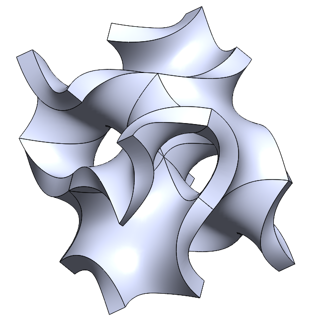
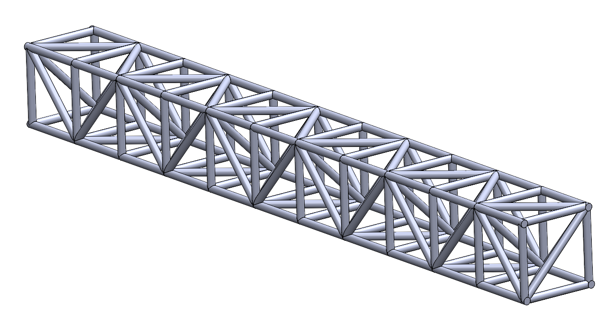
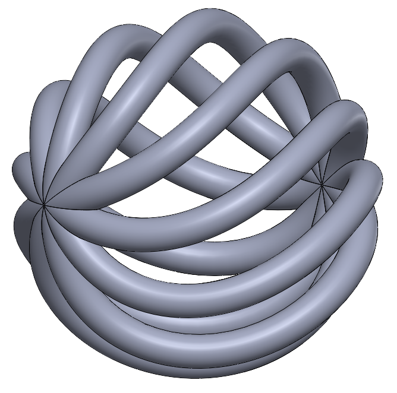
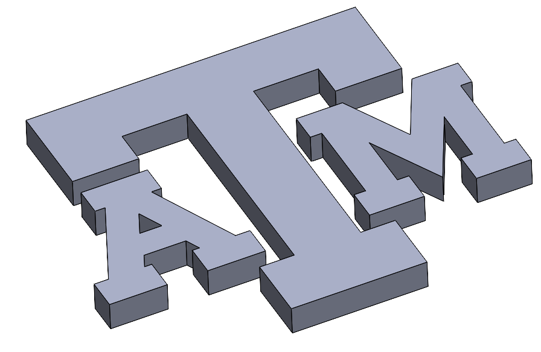

Computational Mechanics · Material Modeling · CAD & Simulation
5+ years of experience in CAD-driven product design and simulation-based engineering. PhD candidate at Texas A&M University developing parametric 3D models and performing multiphysics FEA. Skilled at translating rigorous research into practical engineering insights for manufacturing and multidisciplinary teams.
Bridging rigorous simulation research with practical engineering decision-making across the full design lifecycle.
Nonlinear finite element analysis including large-deformation, thermo-mechanical, and coupled field problems. Expertise writing custom Abaqus user subroutines (UMAT, DLOAD) for advanced material behavior. Validated models against experimental test data with up to 96% correlation.
Development and calibration of hyperelastic (Yeoh), viscoelastic, and degradation-coupled constitutive models. Physics-based modeling of swelling, crystallinity evolution, and transport-driven deformation in polymers and composites for long-term reliability prediction.
Parametric 3D CAD and tolerance-aware mechanical design integrated with simulation workflows. Hands-on additive manufacturing (FDM, SLA) and manufacturing engineering (CNC, GD&T, DFM) to close the loop between computation and physical hardware.
ASTM-compliant mechanical testing — tensile, bending, compression, creep, and relaxation on UTM Instron and MTS machines. Material characterization using DSC, SEM, X-ray CT, spectroscopy, and DMA for structure-property relationship analysis.
Python and MATLAB pipelines for simulation automation, surrogate modeling, parametric optimization, and batch post-processing. Computational workflows that translate directly to industry CAE acceleration and design-space exploration at scale.
Hands-on industry experience at Bharat Dynamics Limited programming and operating CNC machines for aerospace components. GD&T, DFM, BOM management, SAP, CMM inspection, and cross-functional collaboration with quality and production teams.
Topology-driven geometries for simulation, manufacturing, and advanced material research.

TPMS geometry parameterized for additive manufacturing. Tunable stiffness, controlled porosity, and optimized mass-to-strength ratios in lightweight structural components.

Periodic truss topology for structural load-path analysis and FEA-driven optimization. Applicable to aerospace frames, medical implants, and metamaterial cores.

Complex freeform surface for studying curvature-dependent stress concentrations and boundary condition sensitivity in shell structures.

Precision recreation demonstrating clean sketch-driven feature modeling and constraint-based geometry control in SolidWorks.
Finite element simulations capturing nonlinear material response, large deformation, and failure — validated against experimental data.
Abaqus CAE simulation of an ASTM D638 Type IV dogbone specimen fabricated from Onyx (chopped carbon-fiber nylon). An elastic-plastic constitutive model captures the nonlinear stress–strain response and progressive yielding under uniaxial tension, directly correlated with Instron machine data.
Stress contour visualization from Abaqus CAE / ParaView showing Mises stress distribution under large-strain loading. Yeoh model calibrated against experimental tensile and relaxation data.
Abaqus CAE thermo-mechanical simulation of FDM printing a hollow cylindrical geometry using PLA material properties. Captures layer-by-layer deposition, thermal gradients, residual stress buildup, and potential warpage during the additive manufacturing process.
Comprehensive toolchain across simulation, design, programming, and characterization.
Simulation- and design-driven projects with measurable engineering outcomes.
Peer-reviewed research in mechanics, composites, and simulation-driven engineering design.
Actively seeking industry R&D, simulation engineering, and CAE roles — available from 2026.
Whether you need someone who can bridge rigorous mechanics research with practical engineering delivery, own a simulation project from concept through validated design, or strengthen a CAE team with both computational depth and hands-on manufacturing experience — I'd be glad to connect.
nithinvkammara@gmail.com